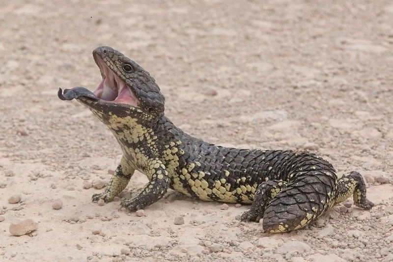

爬行动物 · 动物界
松果蜥 Tiliqua rugosa

澳大利亚南部的短尾石龙子，鳞片粗糙如松果，尾巴短钝形似头部，一夫一妻可相伴多年，遇险时吐出蓝色舌头。
- 分类
- 门脊索动物门纲爬行纲目有鳞目科石龙子科属蓝舌石龙子属
- 栖息环境
- 澳大利亚南部的灌丛、沙地、桉树林、半荒漠与农田边缘
- 地理分布
- 澳大利亚南部，包括西澳南部、南澳、维多利亚和新南威尔士西部
- 保护级别
- IUCN 无危（LC）
物种志
松果蜥体长 26–31 cm，体重 0.6–0.9 kg，身体粗壮，四肢短小。全身覆盖厚实、粗糙的覆瓦状鳞片，形似松果；尾巴很短、末端钝圆，形状和颜色都接近头部，可迷惑天敌；舌头宽大，呈鲜蓝色，受威胁时伸出以威慑对方。
它们分布于澳大利亚南部的干旱与半干旱地区，包括西澳南部、南澳、维多利亚和新南威尔士西部，栖息于灌丛、沙地、桉树林与农田边缘。松果蜥行动缓慢，食性很杂，吃果实、花朵、蜗牛、昆虫、腐肉甚至小型脊椎动物。它们实行一夫一妻制，配对可维持多个繁殖季；与其他石龙子不同，松果蜥为胎生，每胎产 1–3 仔。由于行动迟缓且常穿越公路，路杀是其主要威胁之一。
形态与习性
- 食性果实、花朵、蜗牛、昆虫和腐肉
- 体长26–31 cm
- 体重0.6–0.9 kg
- 繁殖胎生，每胎 1–3 仔
- 寿命约 20–30 年
- 习性一夫一妻，行动缓慢，常晒太阳
趣味知识
- 松果蜥的尾巴短钝，形状和颜色都像头部，天敌常被它迷惑。
- 它与其他石龙子不同，是胎生的，每胎只产 1–3 仔。
- 成对的松果蜥会连续多年在一起活动，是少数有稳定配偶关系的蜥蜴。